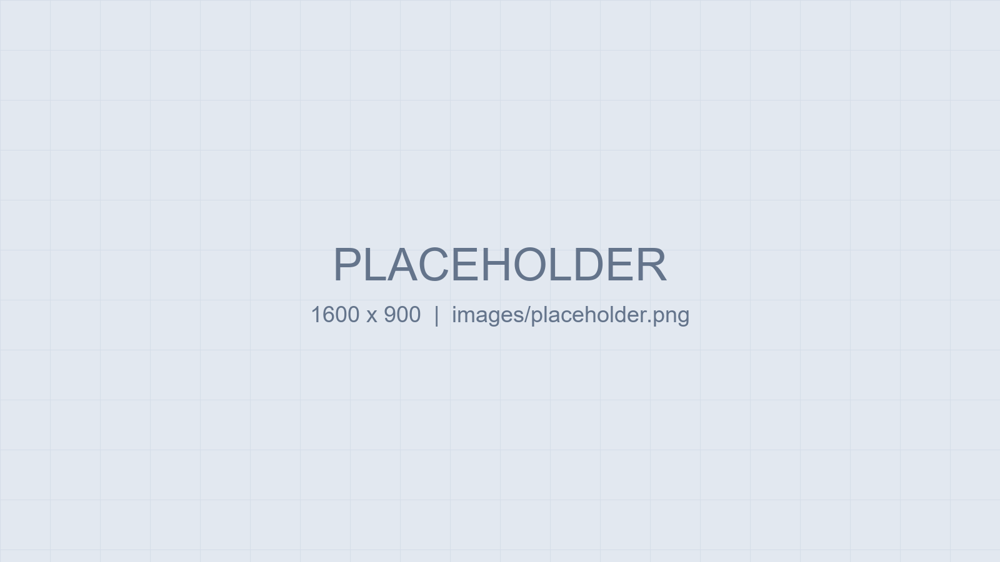

AI 能力工程化
以 Prompt + Rule 約束輸出品質，封裝成可重用、可版本管理的 Skill。
Hi，我是 張三 👋
把 LLM 能力封裝成 Prompt / Rule / Skill，透過 MCP 與插件接進企業系統， 並用 Vue + NestJS + PostgreSQL 交付可上線的工具。

每個專案：痛點 → 解法 → 成果
自動審查程式碼變更，提出問題並產生修復建議。
角色：核心開發（待填）
輸入主題或大綱，產出結構完整、套用企業範本的簡報。
角色：獨立開發（待填）
企業內部管理系統，含權限管理、資料維護與報表。
角色：前後端開發（待填）
不只是「調 Prompt」，而是可維護、可評估的工程流程
依實際專案使用分類
公司名稱（待填）
公司名稱（待填）
資訊工程學系・學士
相關課程：資料結構、資料庫系統、軟體工程（待填）
例如：AI 應用開發相關課程、雲端證照
可放證書連結或線上課程頁面
正在尋找企業 AI 應用開發／前端與工具開發職位，歡迎聯繫。